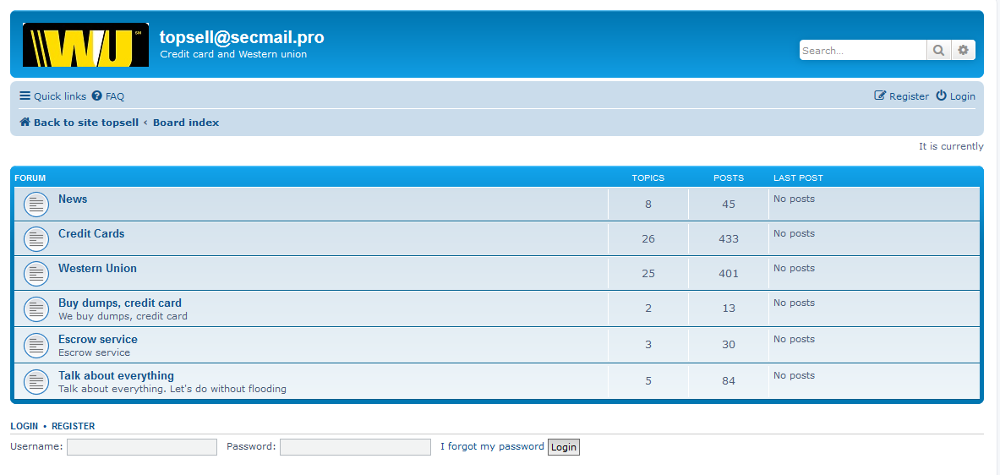

Social deep web tor

http://sf6pmq4fur5c22hu.onion/
- Deep social forum ,communities
http://blkbook3fxhcsn3u.onion/
- BlackBook - Social media site (The facebook of TOR)
http://w363zoq3ylux5rf5.onion/
- Galaxy 2 - A revival of the old Galaxy community.
https://www.facebookcorewwwi.onion/
- Facebook - The real Facebook’s Onion domain. Claim not to keep logs. Trust them at your peril.
http://imwkdn62pvr6jueo.onion/
- MultiVerse Social Network - Social Network with anonymous IRC chat services as well as other features.
http://3cgcpd6bz3gbuhrn.onion/
- Friendica - The friend network
http://society44nlbxqdz.onion/
- Public timeline - society